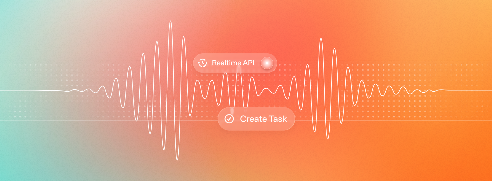

핵심 요약
음성 AI가 진짜 제품이 되려면 “말을 알아듣는다”에서 끝나면 안 된다. 시끄러운 술집에서도 끊기지 않고, 사용자가 잠깐 생각할 때 성급히 끼어들지 않으며, 화면·웹페이지·도구 실행 결과를 맥락으로 자연스럽게 품어야 한다.
Perplexity는 OpenAI Realtime-1.5를 이용해 Comet과 Perplexity Computer의 음성 인터페이스를 만들었고, 매달 수백만 건의 음성 세션을 처리하고 있다. 이 사례가 흥미로운 이유는 성능 자랑보다 **“어디서 망가졌고, 어떻게 고쳤는지”**가 꽤 솔직하게 드러나기 때문이다.

OpenAI Developers 블로그에 실린 Perplexity 음성 인터페이스 사례. 핵심은 모델 하나가 아니라, 컨텍스트·오디오·턴테이킹·도구 설계를 제품 수준으로 맞추는 일이었다.원문: How Perplexity Brought Voice Search to Millions Using the Realtime API
저자: Paul Fryzel(Perplexity), Charu Jaiswal(OpenAI)
질문은 단순했다: “시끄러운 술집에서도 되나?”
Perplexity 팀이 내부 테스트 장면으로 삼은 곳은 샌프란시스코의 시끄러운 바였다. 누군가 친구에게 “새 Perplexity 앱 써봤어?”라고 말한다. 친구가 휴대폰을 꺼내 음성으로 질문한다. 주변은 시끄럽고, 마이크는 완벽하지 않고, 사람은 중간에 멈칫한다.
여기서 실패하면 두 사용자를 잃는다. 여기서 성공하면 반응은 “와, 이거 진짜 되네”에 가까워진다.
이 장면이 중요한 이유는 음성 AI의 기준을 실험실이 아니라 현실의 난장판에 둔다는 점이다. 깨끗한 마이크, 조용한 방, 짧은 질문에서는 대부분의 데모가 그럴듯하다. 하지만 제품은 다르다. 제품은 배경 소음, 말 끊김, 긴 맥락, 갑작스러운 화면 전환을 견뎌야 한다.
Perplexity가 Realtime API를 붙인 것도 단순히 음성 입출력을 추가하려는 시도가 아니었다. Comet 같은 에이전트 브라우저와 Perplexity Computer 같은 디지털 워커를 손 대신 말로 조종할 수 있게 만드는 것이 목표였다.
긴 맥락은 한 번에 넣으면 깨진다
첫 번째 교훈은 컨텍스트 관리다.
Perplexity는 긴 팟캐스트 transcript를 음성으로 탐색하는 경험을 만들고 싶었다. 사용자가 “2시간 30분쯤에 무슨 얘기했지?”라고 물으면, 모델이 그 긴 문서의 특정 지점을 이해하고 답해야 한다.
처음에는 큰 덩어리로 맥락을 넣었다. 그런데 문제가 생겼다. 1만 토큰짜리 업데이트를 넣으려는데 컨텍스트 창에는 5천 토큰만 남아 있다면, 모델이 오래된 내용을 조금씩 밀어내는 방식으로 우아하게 처리하지 않았다. 앞선 대화 맥락이 통째로 날아가는 식의 실패가 발생했다.
그래서 Perplexity는 전략을 바꿨다. 큰 덩어리 대신 약 2,000토큰 단위로 쪼개 순차적으로 넣었다. 오버헤드는 늘었지만, 동작은 훨씬 안정적이었다. 잘리더라도 조금씩 잘리고, 대화 전체가 무너지는 일은 줄어든다.
여기서 더 미묘한 포인트는 “어떤 역할로 넣느냐”였다. Realtime API의 conversation.item.create에서 메시지는 system, user, assistant 역할을 가진다. 웹페이지 내용이나 화면 정보가 모두 user로 들어가면 모델은 마치 사용자가 그 문단들을 직접 말한 것처럼 행동한다. 반대로 너무 많은 것을 system으로 넣으면, 모델은 지시문과 배경지식을 구분하지 못한다.
컨텍스트 관리는 양의 문제가 아니라 의미론의 문제다. 모델에게 세계를 어떻게 설명하느냐가 모델의 행동을 바꾼다.
오디오는 “클라이언트마다 알아서” 두면 망가진다
두 번째 교훈은 오디오 표준화다.
Perplexity는 Ask, Comet, Computer 등 여러 제품 표면을 갖고 있다. iOS는 Swift, 웹은 TypeScript, 하위 레이어는 Rust와 C++가 섞인다. 각 클라이언트가 자기 방식대로 오디오 버퍼를 만들면, 서버 입장에서는 같은 사용자의 음성도 제품 표면마다 다르게 들어온다.
이 차이는 작아 보이지만, 음성 UX에서는 치명적이다. 입력이 흔들리면 출력도 흔들린다. 어떤 환경에서는 잘 알아듣고, 어떤 환경에서는 갑자기 끊기거나 지연된다. 사용자는 “이 기능은 가끔 된다”고 느낀다. 신뢰가 깨진다.
Perplexity의 해법은 Rust 기반 공유 오디오 SDK였다. 모든 클라이언트가 같은 오디오 계약을 지키도록 만들었다.
- 48kHz mono로 리샘플링
- Opus codec과 WebRTC 내부 rate에 맞춤
- WebRTC APM을 통한 echo cancellation, automatic gain control, noise reduction, high-pass filtering
- 전송 전 인코딩 파이프라인 표준화
사용자는 이 인프라를 보지 못한다. 하지만 이런 보이지 않는 층이 없으면, 음성 AI는 데모에서는 멋지고 제품에서는 불안정한 기능이 된다.
가장 어려운 UX는 “언제 끼어들지 않는가”였다
세 번째 교훈은 VAD, 즉 Voice Activity Detection이다. 쉽게 말하면 “사용자가 말을 끝냈는지 판단하는 장치”다.
조용한 방에서는 어렵지 않아 보인다. 소리가 멈추면 턴이 끝났다고 보면 된다. 하지만 실제 사용자는 그렇게 말하지 않는다. 생각하느라 멈춘다. 화면에서 뭔가를 찾느라 멈춘다. 수식이나 문장을 읽기 전 잠깐 멈춘다.
이때 모델이 성급히 끼어들면 경험이 망가진다. 특히 기술적인 질문에서 심했다. 사용자가 수학 유도 과정을 질문하다가 공식을 찾으려고 잠깐 멈췄는데, 모델이 “답변을 시작해버리는” 식이다.
Perplexity가 만든 패턴은 voice lock이었다. 전통적인 push-to-talk는 기본적으로 음성이 꺼져 있고, 사용자가 버튼을 눌러 말한다. voice lock은 반대다. 기본 상호작용은 자연스럽게 열려 있지만, 사용자가 “내가 아직 말하는 중이야”라는 턴을 잠글 수 있다.
이건 작은 기능처럼 보이지만, 앞으로의 음성 에이전트에서 꽤 중요한 설계 원칙이 될 수 있다. 음성 인터페이스는 단순 질의응답을 넘어 작업 위임, 브라우징, 문서 탐색, 코딩 보조로 확장되고 있다. 그럴수록 핵심은 “잘 말하는 모델”이 아니라 사람의 침묵을 오해하지 않는 시스템이다.
도구는 많이 줄수록 좋은 게 아니었다
네 번째 교훈은 도구 설계다.
Perplexity는 모델에게 줄 수 있는 도구를 10개 미만의 핵심 도구로 좁혔다. 더 많은 도구를 주면 더 많은 일을 할 수 있을 것 같지만, 실제 제품에서는 안정성이 떨어질 수 있다. 모델이 어떤 도구를 언제 써야 하는지 헷갈리기 때문이다.
또 하나 중요한 점은 도구 출력 형식이었다. 도구 결과를 자연어 문장과 지시문이 섞인 형태로 주면, 모델이 사용자에게 말해야 할 내용과 내부적으로 따라야 할 행동 지침을 뒤섞을 수 있다.
그래서 Perplexity는 도구 출력을 구조화했다. 예를 들어 사용자에게 말할 문장은 response_text, 그대로 반복해야 하는지 같은 행동 플래그는 require_repeat_verbatim처럼 분리한다.
{
"response_text": "시장 조사 대시보드를 만드는 작업을 시작했어요.",
"require_repeat_verbatim": true
}이 방식이 중요한 이유는 단순하다. 언어모델은 자신이 훈련 중에 자주 본 분포와 비슷한 입력에서 더 안정적으로 행동한다. 도구 스키마와 출력도 모델이 이해하기 쉬운 구조로 맞춰야 한다.
에이전트의 품질은 모델 지능만이 아니라, 도구를 얼마나 좁고 선명하게 설계했는지에 달려 있다.
Realtime API의 의미: 음성은 입력 방식이 아니라 제품 표면이다
OpenAI Realtime API의 핵심은 낮은 지연시간의 양방향 오디오 상호작용이다. 예전 방식은 음성을 텍스트로 변환하고, 텍스트 모델이 답을 만들고, 다시 음성으로 변환하는 여러 단계의 파이프라인에 가까웠다. Realtime API는 이 과정을 훨씬 자연스러운 상호작용으로 압축한다.
하지만 Perplexity 사례가 보여주는 진짜 메시지는 “API 하나 붙이면 음성 제품이 된다”가 아니다.
오히려 반대다. API가 좋아질수록 제품 설계의 빈틈이 더 잘 드러난다.
- 긴 맥락을 어떻게 넣을 것인가
- 화면과 웹페이지 정보를 어떤 역할로 설명할 것인가
- 서로 다른 클라이언트의 오디오를 어떻게 동일하게 만들 것인가
- 사용자의 침묵을 언제 기다릴 것인가
- 모델에게 어떤 도구만 허용할 것인가
- 도구 결과를 어떤 구조로 되돌릴 것인가
이 질문들에 답하지 못하면, 음성 AI는 여전히 데모에 머문다.
검색의 미래는 “말로 묻는 에이전트”에 가까워진다
Perplexity가 만드는 방향은 검색창에 음성 버튼을 붙이는 수준이 아니다. Comet과 Computer를 보면 목표는 더 분명하다. 사용자는 검색어를 입력하는 대신, 에이전트에게 말로 작업을 맡긴다. 에이전트는 웹을 보고, 도구를 쓰고, 문맥을 유지하며, 결과를 다시 말로 설명한다.
그때 음성은 단순한 입력 수단이 아니다. 작업을 위임하는 인터페이스가 된다.
이 변화는 검색과 제품 UX 양쪽에 영향을 준다. 검색에서는 사용자가 짧은 키워드 대신 완전한 질문을 던진다. 제품에서는 사용자가 버튼을 찾는 대신 “이거 해줘”라고 말한다. 그리고 에이전트는 하나의 답, 하나의 행동, 하나의 추천을 내놓는다.
기존 SEO가 “목록에서 몇 번째인가”의 싸움이었다면, 음성 기반 AI 검색은 “합성된 답변 안에 등장하는가”의 싸움에 가까워진다. 제품 UX에서는 “기능이 있는가”보다 “말로 맡겼을 때 실패하지 않는가”가 더 중요해진다.
마지막으로 남는 교훈
Perplexity가 증명한 것은 음성 검색이 가능하다는 사실이 아니다. 그건 이미 오래전부터 가능했다.
더 중요한 증명은 이것이다. 음성 AI를 제품으로 만들려면, 모델보다 주변 설계가 더 많이 필요하다. 컨텍스트를 쪼개고, 오디오를 표준화하고, 침묵을 기다리고, 도구를 줄이고, 출력 구조를 정리해야 한다.
마법처럼 보이는 인터페이스는 대개 마법이 아니다. 사용자가 말을 멈춘 0.5초를 어떻게 해석할지 끝까지 고민한 엔지니어링의 결과다.